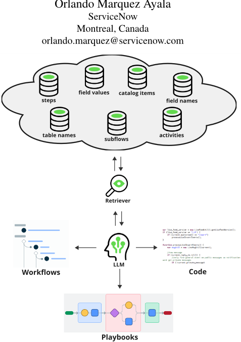

面向领域专用与高效 RAG 的多任务检索器微调
企业在生产系统中部署多个依赖 RAG 的 GenAI 应用时，现成 embedding 模型难以适配来自数据库的结构化领域数据，且为每个任务单独部署 retriever 无法扩展。论文提出对 305M 参数的 mGTE-base 做多任务 instruction fine-tuning：从内部数据库与 Flow Generation 训练集自动抽取 text-step/table/field 等配对数据，用 15 个指令模板与正负样本挖掘构建训练集，并对高频组件做指数降采样，让一个模型服务 Flow Generation、Playbook Generation、Code Generation 等多个应用。在 HR、财务等域外数据上，微调模型达到 Step@15 0.90、Table@5 0.90、Field@5 0.60，显著超过 BM25 与 mE5、GTE-Qwen2 等开源 embedding 模型；值得注意的是 BM25 反而稳定优于这些开源模型。模型还保留多语言能力并泛化到相似的 workflow 检索任务，但非英语场景性能明显下降。
真实生产系统中的 RAG 应用面临两个实际问题：一是检索内容高度领域化，现成 embedding 服务在开源基准上表现好但难以泛化到来自数据库的结构化真实数据；二是随着应用增多，无法为每个任务单独部署一个 retriever。核心问题是：如何把检索步骤适配到特定领域并同时适配多种检索任务，且保持低成本、可扩展与低延迟。
从内部数据库与 Flow Generation 训练集自动抽取 text-对象配对（step、table、table field、catalog item 等）构建多任务检索数据集，全程不做人工标注；用 15 个 instruction 模板把需求、scope、workflow 上下文等信息编入检索指令；按句子嵌入训练惯例构造正负样本对（负样本用两种采样策略挖掘）；对高频组件按频率指数降采样以缓解数据不均衡；最终以对比损失对 mGTE-base（305M 参数、8,192 tokens 上下文、多语言）做 instruction fine-tuning，部署单一 retriever 服务整个 GenAI 应用生态。
对高频 step 做指数降采样后，微调 mGTE-base 的 step 检索提升 8%，field 检索仅有小幅损失
在所有 OOD split 的加权平均上，多任务微调 mGTE-base 达到 Step@15 0.90、Table@5 0.90、Field@5 0.60，全面超过 BM25 与 mE5（small/base/large）、GTE-Qwen-2、E5-mistral、GritLM
BM25 稳定优于所有被评测的开源 embedding 模型（与规模无关）；mE5 从 small 扩到 large 无提升甚至更低
多语言评测（DE/ES/FR/JA/HE，经 Google Translate 翻译）：微调模型整体优于 base mGTE（仅希伯来语 step 检索例外），但显著低于英语结果：step 0.90→0.64、table 0.90→0.66、field 0.60→0.48
workflow 检索泛化任务（recall@5，303 例）：微调模型优于 BM25 与 base 模型，但 base 模型平均已达 0.87，作者认为该任务可能偏容易
与联合训练 retriever 与 generator、引入知识图谱、或通过 Retrieval-Augmented Fine Tuning 修改 LLM 训练数据的领域 RAG 工作不同，本方法只训练一个更好的 retriever，可与任意 LLM 搭配、降低耦合；并将 instruction-following embedding 的多任务训练思路应用到从数据库抽取的结构化数据检索上，用一个 305M 小模型服务整个企业 GenAI 应用生态。
相关度级别：high
命中能力域：3.1 上下文工程与记忆 | 3.5 评测与可靠使用
理由：论文核心是 RAG 检索步骤的领域适配与多任务复用，直接命中 3.1 的'RAG/检索增强、上下文在生产系统中的管理'：检索质量决定进入 LLM 上下文的数据质量，这是团队知识库问答、代码生成辅助等场景的共性基础。同时论文以单一小模型服务多应用、最小化硬件成本与延迟，并给出 OOD/多语言/任务泛化的系统性检索评测方法，与 3.5 的'成本与效率优化、评测方法、AI 辅助工程实证'相关。虽然涉及微调，但对象是小型 retriever 而非 LLM，属于'把模型用好'的工程范畴，与团队定位一致。
建议动作：深入精读并做内部分享
arXiv:2501.04652v2 [cs.CL] 16 Jul 2025
Patrice Bechard ServiceNow 加拿大蒙特利尔
patrice.bechard@servicenow.com 不同规模的现成检索器可供 AI 从业者使用。诸如 Voyage 1 之类的嵌入服务在开源基准测试上表现良好，但它们不一定能泛化到现实场景中出现的那类数据，尤其是当这些数据是结构化的且来自现有数据库时。

另一个实际挑战是在依赖于检索的不同生成式人工智能（GenAI）用例之间实现可扩展性与泛化。与传统机器学习模型相比，大语言模型（LLM）的一个关键优势在于，得益于海量的预训练数据和指令微调 [20, 31, 34]，它们能够泛化到各种各样的任务。但如果检索器无法在众多检索任务上实现良好而快速的表现，下游生成将受到负面影响。
那么，我们试图解决的问题是：如何将检索步骤适配到特定领域以及多种检索任务？在这项工作中，我们并不关注 LLM 的选择，
1 https://docs.voyageai.com/docs/embeddings
检索增强生成（Retrieval-Augmented Generation, RAG）在部署大语言模型（Large Language Model, LLM）时已变得无处不在，因为它能够应对生成幻觉信息或过时信息等典型局限。然而，在构建真实世界的 RAG 应用时，会出现一些实际问题。首先，检索到的信息通常是特定领域的。由于微调 LLM 的计算开销很大，因此更可行的做法是微调检索器模型，以提升 LLM 输入中所含数据的质量。其次，随着越来越多的应用部署到同一个真实世界系统中，为不同任务分别部署检索器是难以承受的。此外，这些 RAG 应用通常需要检索不同类型的数据。我们的解决方案是在多种特定领域任务上对一个小型检索器模型进行指令微调，从而只需部署一个模型即可服务于众多用例，进而实现低成本、可扩展性与高速度。我们展示了该模型如何在真实世界的企业用例中泛化到域外设置，以及泛化到一个未见过的检索任务。
· 计算方法学 → 信息抽取；多任务学习；学习排序；· 信息系统 → 检索模型与排序。
检索增强生成（Retrieval-Augmented Generation, RAG）、工作流、微调、多任务、检索器
随着越来越多的生成式人工智能（Generative AI, GenAI）应用被集成到真实的生产系统中，检索增强生成（Retrieval-Augmented Generation, RAG）已被业界采用为一种提升大语言模型（Large Language Model, LLM）输出质量的常用技术。RAG 缓解了 LLM 固有的一些缺陷，例如容易产生幻觉的倾向、生成过时的知识以及缺乏对数据源的可追溯性 [6, 9]。
然而，在生成过程中引入检索步骤也带来了若干实际挑战。虽然像 GPT-4 [19] 这样拥有大量参数的 LLM 可以通过提示来处理任意类型的输入并生成任意类型的文本输出，但检索器必须小巧、快速，并且能够在往往具有领域特性的数据源上表现良好。
KDD Workshop '25，加拿大多伦多，2025 年。
并假设检索结果的改进能够转化为下游生成任务的改进。
本文的应用场景是一家企业，该企业部署了多个目前依赖或将要依赖 RAG 的 GenAI 应用：Flow Generation [3]、Playbook Generation 2 以及 Code Generation。工作流（workflow）是自动化实现一个或多个目标的分步流程，而 playbook 则包含工作流以及其他诸如表单之类的 UI 组件。这些应用的目标是从文本输入生成领域特定的工作流、playbook 和代码。
我们的解决方案是在多种任务上对一个小型检索器进行指令微调（instruction fine-tuning）。该检索器被部署在 GenAI 应用生态系统中，各应用通过提示让它从数据库中检索所需的结构化数据。随后，工作流步骤名称、表名、字段名等信息会被传递给 LLM，用于生成工作流或 playbook，从而带来更高的输出质量。
为了构建多任务检索器数据集，我们从内部数据库中提取数据，并复用了 Flow Generation 训练集。在我们的解决方案中，我们选择对 mGTE [36] 进行微调，原因在于其上下文长度较大（8,192 个 token），使其能够接收较长的指令，并且它还具备多语言能力。我们将其与 BM25（一种简单而强大的词频方法 [23]）以及近期的开源多语言嵌入模型 mE5 [30] 和 mGTE 进行比较。我们还纳入了对基于 LLM 的更大规模指令微调模型的评估，即 GTE-Qwen-2 [32]、E5-mistral [29] 和 GritLM [17]。
我们进行了多项评估。首先，我们在检索器（retriever）所训练的任务上进行评估，但采用域外（out-of-domain, OOD）设置。内部训练数据集来自 IT 领域，而 OOD 划分则来自人力资源（HR）和财务等多样化领域。随后，我们在一个相关但不同的检索任务上进行评估，以测试模型的泛化能力。例如，虽然模型被训练用于基于文本检索步骤名称，我们还希望基于文本检索相关的工作流结构。这是一个相关任务，因为工作流由步骤组成。最后，为了考察模型的多语言能力在经过我们的多任务微调后是否得以保留，我们使用不同语言的输入进行评估，尽管我们的检索训练数据集仅有英文版本。
我们的贡献如下：
已有多项研究致力于实现面向特定领域的检索增强生成（RAG）。尽管更为复杂，但联合训练检索器与生成器已被证明在问答任务中效果良好 [25]。另一些工作则在向量数据库之外，还将领域特定信息编码到知识图谱中 [2]。检索增强微调（Retrieval-Augmented Fine Tuning）[35] 通过修改检索到的信息在大语言模型（LLM）训练数据集中的呈现方式，帮助 LLM 适应特定领域。相比之下，我们的方法仅依赖于训练一个更好的检索器，该检索器可与任何 LLM 配合使用，从而降低了耦合度。
experiences/page/administer/now-assist-platform/concept/now-assist-playbook-
2 www.servicenow.com/docs/bundle/xanadu-intelligentgeneration-skill.html
多任务检索器模型 [15, 28] 通过同时在多个任务上进行训练，或利用涵盖多样主题的大型数据集，来增强嵌入的通用性。在这一概念的基础上，指令遵循嵌入模型 [1, 4, 26] 将显式指令融入嵌入过程，从而能够生成更加细致且更具任务针对性的嵌入。我们利用这种指令微调方法，在多个包含从数据库中提取的结构化数据的数据集上训练检索器。
最后，生成工作流是一项结构化输出任务，与代码生成类似，需要专门的嵌入。代码嵌入模型 [7, 10, 13, 18, 33] 将常见的训练技术适配到代码表示学习与检索这一领域。另一条并行的研究路线则聚焦于结构化数据嵌入模型，其中包括 Synchromesh [21]，它对模型进行微调，利用一种由树编辑距离导出的相似度度量来检索相关样本以用于少样本提示；以及 SANTA [14]，它实现了一种经过修改的预训练目标，以生成具备结构感知能力的表示。先前工作已经将 RAG 用于一个类似但更为受限的结构化输出任务 [3]。本文是对这一方向的自然扩展，旨在提高检索器在不断扩大的生成式 AI（GenAI）应用生态系统中的可复用性。
为了构建多任务检索器，我们首先需要定义任务，然后构建相应的数据集，同时要牢记我们无法为这些任务进行任何人工标注。出发点是定义现有 RAG 应用所需要的数据。
当前部署在我们系统中的 GenAI 应用需要多种类型的检索数据，才能生成用户可接受的输出。随着这些应用变得更加复杂，所检索数据的范围和类型只会不断增加。但目前我们主要关注两类对象：一是步骤（steps），它们被工作流（workflows）和剧本（playbooks）所使用；二是表（tables），它们被工作流和剧本所使用，并且可用于代码生成。步骤是流程的构建模块；它们可以是动作（actions）、子流程（subflows）或活动（activities）。对于表而言，关键信息是表名和表字段名。例如，用户可能想要生成执行数据库调用的代码，但若不基于实际的表信息对 LLM 进行接地（grounding），LLM 可能会引用一个不存在的表名。
我们从两个来源提取数据，以构建多任务检索数据集。复杂且语义多样的样本由 Flow Generation 训练集创建而来。图 2 展示了该集合中一个以 YAML 格式表示的示例，其中包含步骤名（definition）、表名以及表字段名（conditions 和 values 的一部分）。另一个来源是数据库表，这些数据库表包含除步骤和表之外、我们所感兴趣的其他元素，且这些元素含有诸如 description 之类的文本字段。
我们从 Flow Generation 训练集中构建了三类任务，约占全部检索示例的一半：
requirement: Every day, look up incident tasks that do not have assignees and close them. trigger: annotation: every day type: daily inputs: - name: time value: '1970-01-02 00:00:00' steps: - annotation: look up incident tasks that do not have assignees definition: look_up_records order: 1 inputs: - name: table value: incident_task - name: conditions value: assigned_toISEMPTY - annotation: for each record definition: FOREACH order: 2 inputs: - name: items value: '{{1.Records}}' - annotation: close them definition: update_record order: 3 block: 2 inputs: - name: record value: '{{2.item}}' - name: table_name value: incident_task - name: values value: state=3
为了增加每类任务的多样性，我们纳入了输入的若干种排列变体，例如：
其余一半的检索示例来自数据库表，例如 catalog items 表。该表表示系统中可申请的物品，例如笔记本电脑。目录项名称旁还有一个 description 字段，由此形成一项根据描述检索物品名称的任务。
在定义了用于训练检索器的任务之后，我们着手创建一组由文本和对象组成的配对，其中对象可以是步骤、表、表字段名、目录项等。配对中的文本部分是一条描述需要检索内容的指令。下面我们指示检索器仅根据一条需求来查找步骤。
Represent this requirement for searching relevant steps: requirement: Every day, look up incident tasks that do not have assignees and close them.
鉴于可能有更多元数据可用于查找步骤，我们可以在指令中添加额外信息。下面我们告诉检索器，该流程属于 teams 范围的一部分。
Represent this flow for searching relevant steps: type: flow scope: sn_ms_teams_ah requirement: Every day at 9am, notify me of pending tasks in a teams msg.
由于我们对检索器进行了指令微调（instruction fine-tuning），我们甚至可以添加更多细节。例如，指令中可以包含工作流上下文。当我们希望检索器除了最后一条批注之外，还受到工作流中已包含内容的影响时，这一点非常有用。
Represent this flow for searching relevant steps for the last step: type: flow rcope: sn_ms_teams_ah requirement: Every day, look up incident tasks that do not have assignees and close them. trigger: annotation: every day type: daily inputs: - name: time - value: '1970-01-02 00:00:00' steps: - annotation: look up incident tasks that do not have assignees
我们可以使用类似的指令来检索任何元素。因此，给定已标注的工作流和数据库表的摘录，我们便能为文本/步骤、文本/表、文本/字段、文本/目录项等创建大量样本。我们总共使用 15 个指令模板来增加输入的多样性，并计划添加更多。
遵循句子嵌入模型训练中已确立的实践 [22]，我们同时创建正样本对和负样本对，使模型能够有效地区分并检索相关元素。
正样本如上所述从已标注的工作流中提取。为了挖掘负样本，我们采用两种采样策略：
我们描述了用于训练和评估的数据集、与之比较的基线（baseline）方法，以及所使用的检索指标。
在训练中，我们使用从 Flow generation 训练集和数据集表格中能够提取的所有配对，但对于开发集，我们仅在步骤、表名和表字段检索上进行评估，因为这些是最重要的检索任务。开发集样本仅来自 Flow Generation 开发集。表 1 展示了多任务开发集中步骤、表和字段的样本数量。
| Train Pairs | Dev Steps | Dev Tables | Dev Fields |
|---|---|---|---|
| 172,658 | 279 | 307 | 355 |
| Train Pairs | Dev Steps | Dev Tables | Dev Fields |
尽管数据集中有接近 5K 个不同的步骤，但其中约有 20 个被使用得最为频繁。这在步骤检索任务中造成了很大的不平衡。例如，look _up_record 步骤的使用频率远高于 slack scope 中的步骤，因为检索数据库记录是工作流中的常见操作。因此，我们尝试根据组件的出现频率以指数方式对其进行下采样（例如，对数据集中出现 50 次的步骤按 4 倍下采样，对出现 500 次的步骤按 16 倍下采样）。类似的方法也应用于表和字段，尽管它们的不平衡程度没有那么剧烈。
在评估方面，我们使用来自企业系统部署的 10 个数据划分（split），从而模拟在真实客户环境中的评估。虽然标注数据集来自我们内部的 IT 领域，但这些其他划分来自不同的领域，并包含 IT 领域中不存在的步骤和表。它们的统计信息如表 2 所示。
| Dataset ID | Flows | Steps samples | Tables samples | Fields samples |
|---|---|---|---|---|
| OOD1 | 103 | 166 | 58 | 107 |
| OOD2 | 100 | 94 | 209 | 392 |
| OOD3 | 100 | 119 | 261 | 450 |
| OOD4 | 100 | 136 | 188 | 275 |
| OOD5 | 100 | 141 | 206 | 305 |
| OOD6 | 100 | 179 | 255 | 529 |
| OOD7 | 98 | 140 | 329 | 665 |
| OOD8 | 100 | 145 | 188 | 246 |
| OOD9 | 100 | 207 | 158 | 301 |
| OOD10 | 171 | 134 | 477 | 690 |
| TOTAL | 1,072 | 1,461 | 2,329 | 3,960 |
| Dataset ID | Flows | Steps samples | Tables samples | Fields samples |
为了检验基础模型（mGTE）的多语言能力在经过我们的多任务微调后是否得以保留，我们使用 Google Translate API 对开发数据集进行了翻译。
最后，我们的目标是泛化到类似的检索任务，使检索器能够用于任何需要类似数据的检索增强生成（RAG）应用。为此，我们创建了一个名为 workflow retrieval 的任务，即从文本中检索工作流（YAML 格式）。这对于 Flow Generation 中的少样本提示（few-shot prompting）可能很有用。对于该任务，我们在来自 OOD1、OOD8 和 OOD9 的 flow 上进行评估，共得到 303 个样本。
我们对比的最简单基线是 BM25，它在 RAG 部署方面最为简单。更强的基线是开源多语言模型。我们选取了 mE5 [30] 的 small（118M）、base（278M）和 large（560M）版本，以观察更多的参数是否有助于检索。由于 mE5 的上下文长度为 512，我们还选择了 mGTE-base [36]，其上下文长度为 8,192，参数量为 305M。
我们的解决方案是使用对比损失目标 [11] 对 mGTE-base 进行微调。我们偏好具有大上下文的检索器，因为一旦部署，我们将无法控制其接收到的指令/上下文的长度。我们还偏好较小的模型，以使 RAG 的检索部分能够扩展到大量的大语言模型（LLM）并发调用。附录 A 提供了我们训练过程的详细信息，包括超参数。
我们在所有任务中均使用 Recall@K [16] 作为评估指标。虽然我们简要探索了更复杂的指标，例如归一化折损累计增益（NDCG）[12] 和平均倒数排名（MRR）[27]，但我们发现，在我们的使用场景中，这些指标与召回率高度相关。
我们报告最重要检索任务上的结果。在生成包含许多步骤的工作流或操作手册（playbook）时，LLM 需要锚定（grounded）在客户所安装的企业系统上。在这些情况下，由于我们建议向 LLM 展示许多步骤，因此我们采用 Step@15（K=15）进行评估。当 LLM 需要在其生成内容中包含表名或字段名时，我们建议提供更少的选择，因为通常只需要一到两个表；因此，这里我们使用 Table@5 和 Field@5（K=5）。
我们首先展示如何利用开发集得到我们最佳的多任务检索器，并将其与在每个任务上单独微调的模型进行比较。随后我们展示分布外（OOD）、多语言以及工作流检索的结果。
由于相关任务的数据集规模更大，我们预期多任务微调会优于单任务微调。然而，我们并未预料到步骤分布的不均衡会导致如此程度的性能下降。表 3 显示，在经过微调的 mGTE-base 模型上，对数据进行下采样使步骤检索提升了 8%，而字段检索仅有小幅损失。
这些发现表明，在为 RAG 微调检索器时，需要谨慎对待数据集的构成。在实际场景中，通常存在较大的数据不均衡，需要根据具体领域加以处理。
| Setup | Step@15 | Table@5 | Field@5 |
|---|---|---|---|
| Single Task | 0.78 | 0.82 | 0.71 |
| Multi-Task | 0.77 | 0.86 | 0.73 |
| + Downsampled data | 0.86 | 0.88 | 0.71 |
| Setup | Step@15 | Table@5 | Field@5 |
表 4 展示了在所有分布外（OOD）划分上按数据集规模加权的平均结果。
| Model | Step@15 | Table@5 | Field@5 |
|---|---|---|---|
| BM25 | 0.82 | 0.79 | 0.26 |
| mE5-Small | 0.72 | 0.54 | 0.15 |
| mE5-Base | 0.74 | 0.64 | 0.15 |
| mE5-Large | 0.72 | 0.59 | 0.13 |
| mE5-Large-Instruct | 0.8 | 0.74 | 0.14 |
| mGTE-Base | 0.72 | 0.63 | 0.08 |
| GTE-Qwen2-1.5B-Instruct | 0.21 | 0.12 | 0.01 |
| GTE-Qwen2-7B-Instruct | 0.18 | 0.08 | 0.03 |
| GritLM-7B | 0.75 | 0.59 | 0.16 |
| E5-Mistral-7B-Instruct | 0.57 | 0.51 | 0.16 |
| Finetuned mGTE-Base (Ours) | 0.9 | 0.9 | 0.6 |
| Model | Step@15 | Table@5 | Field@5 |
在我们的领域特定检索基准测试（benchmark）上，我们经过多任务微调的 mGTE-base 模型在所有指标上均取得最高性能，大幅优于 BM25 以及所有被评估的开源嵌入模型。值得注意的是，无论模型规模大小，BM25 始终优于开源嵌入模型，其中包括 mE5-large 和 GTE-Qwen2 等更大的变体。将 mE5 检索器从 small 规模扩展到 large 规模并未带来提升，在某些情况下反而导致更低的分数。只有我们的模型带来了强劲且一致的提升，在 Step@15 和 Table@5 上均达到 0.90，在 Field@5 上达到 0.60。
我们还观察到，字段检索是最困难的任务，因为与表和步骤相比，字段名称的种类更加繁多。该检索器似乎能够很好地跨领域泛化，因为其召回率数值与开发集上的结果（如表 3 所示）相差不大。
我们选择 mGTE 作为基础模型，不仅因为它具有较长的上下文长度，还因为它支持多种语言。许多开源和商业大语言模型（LLM）已经支持多种语言。要让 RAG 正常工作，检索器也需要在非英语语言下表现良好。
我们使用 Google Translate API 将开发数据集翻译成德语（DE）、西班牙语（ES）、法语（FR）、日语（JA）和希伯来语（HE）。表 5 展示了 mGTE-base 与我们微调版本的对比结果。
我们在英文数据集上进行的多任务微调使检索器在这些非英语数据集上的表现优于基础模型。
| Model | DE | ES | FR | JA | HE | Avg. |
|---|---|---|---|---|---|---|
| Step@15 mGTE-base | 0.53 | 0.66 | 0.66 | 0.6 | 0.47 | 0.58 |
| Ours | 0.65 | 0.75 | 0.76 | 0.64 | 0.42 | 0.64 |
| Table@5 mGTE-base | 0.34 | 0.38 | 0.42 | 0.36 | 0.39 | 0.38 |
| Ours | 0.65 | 0.76 | 0.71 | 0.62 | 0.57 | 0.66 |
| Field@5 mGTE-base | 0.15 | 0.17 | 0.16 | 0.15 | 0.17 | 0.16 |
| Ours | 0.49 | 0.58 | 0.57 | 0.41 | 0.36 | 0.48 |
| Model | DE | ES | FR | JA | HE | Avg. |
基础模型表现更好的唯一情形是希伯来语步骤检索。然而，所有三种检索任务的平均结果都显著低于表 4 所示的英文结果：步骤检索从 0.90 降至 0.64，表检索从 0.90 降至 0.66，字段检索从 0.60 降至 0.48。这表明我们可能需要在多任务数据集中加入一些多语言的领域特定数据。
一旦我们的检索器部署完成，它就可以被任何其他 RAG 应用所使用。因此，我们在一个类似的任务上对其进行评估，该任务需要根据给定文本检索工作流。我们使用 recall@5 指标，即针对特定文本查找单个工作流。为了缩短评估时间，我们选取了三个分布外（OOD）数据划分。
表 6 显示，多任务微调后的检索器表现优于 BM25 和基础模型。但这个任务可能过于简单，因为基础模型平均获得了 0.87 的 recall@5。尽管如此，我们的微调仍然提升了性能，这表明多任务数据集能够将知识迁移到类似的检索任务中。
| Model | OOD1 | OOD8 | OOD9 | Avg. |
|---|---|---|---|---|
| BM25 | 0.73 | 0.6 | 0.66 | 0.66 |
| mGTE-base | 0.94 | 0.76 | 0.9 | 0.87 |
| Ours | 0.98 | 0.93 | 0.9 | 0.94 |
| Model | OOD1 | OOD8 | OOD9 | Avg. |
我们提出了一种构建面向特定领域检索增强生成（RAG）的小型检索器的方法。通过多任务训练和指令微调，我们可以为多种应用部署仅含 305M 参数的检索器，从而将硬件成本和延迟降至最低。此外，该检索器在特定领域用例的多语言数据集上表现良好，并在泛化至类似检索任务方面展现出令人鼓舞的结果。未来的工作包括扩展检索任务以及提升微调模型的多语言能力。
我们对 mGTE-base 进行了 5,000 步的微调，相当于在该数据集上训练约 2 个 epoch。训练超参数如下：采用批大小（batch size）为 32 的设置，其中每设备批大小为 2，梯度累积步数为 16。由于我们未使用批内负样本（in-batch negatives），因此无需采用 GradCache [8] 等技术来应对更大的批大小。学习率设置为 5e-5，权重衰减为 0.01。先实施 500 步的预热期，随后采用余弦学习率调度器。为优化内存使用，采用了梯度检查点（gradient checkpointing）技术 [5]。选用 Adafactor 优化器 [24] 以限制内存消耗。